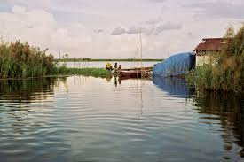

Andhra Pradesh
Food:
Pulihora, or tamarind rice along with green chilies is the most
popular food in Andhra Pradesh. The vegetarian dishes consist of koora,
which include cooking different vegetables in a variety of styles - with gravy,
frying, with lentils, etc.
Vegetation:

The total forest cover of Andhra Pradesh is 22,862 km2.
The Eastern Ghats region is home to dense tropical forests,
while the vegetation becomes sparse as the Ghats give way to the Deccan Plateau, where shrub
vegetation is more common.
Climate:
The climate of Andhra Pradesh is generally hot and humid. The summe
season in this state generally extends from March to June.
At certain places the temperature is as high as 45 °C on a summer day.
The summer is followed by the monsoon season, which starts during June
and continues till September.